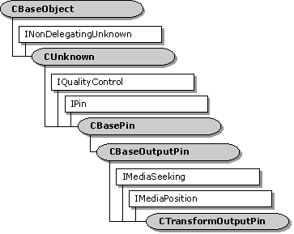

description: The CTransformOutputPin class implements an output pin that is used by the CTransformFilter class. ms.assetid: 76f9a981-8f0d-45d4-b901-c5ec5b5ac9ee title: CTransformOutputPin class (Transfrm.h) ms.topic: reference ms.date: 4/26/2023 topic_type:
[The feature associated with this page, DirectShow, is a legacy feature. It has been superseded by MediaPlayer, IMFMediaEngine, and Audio/Video Capture in Media Foundation. Those features have been optimized for Windows 10 and Windows 11. Microsoft strongly recommends that new code use MediaPlayer, IMFMediaEngine and Audio/Video Capture in Media Foundation instead of DirectShow, when possible. Microsoft suggests that existing code that uses the legacy APIs be rewritten to use the new APIs if possible.]

The CTransformOutputPin class implements an output pin that is used by the CTransformFilter class.
Typically, you do not need to derive from this class. Most of the methods in this class call corresponding methods on the CTransformFilter class, which you can override. If you derive from this class, you must override the filter's CTransformFilter::GetPin method to create instances of your derived class.
This class exposes the IMediaSeeking and IMediaPosition interfaces through the CPosPassThru object. It passes all seek requests to the next filter upstream.
| Protected Member Variables | Description |
|---|---|
| m_pTransformFilter | Pointer to the owning filter. |
| Public Member Variables | Description |
| m_pPosition | Helper object to pass seek commands upstream. |
| Public Methods | Description |
| CTransformOutputPin | Constructor method. |
| ~CTransformOutputPin | Destructor method. |
| CheckConnect | Determines whether a pin connection is suitable. |
| BreakConnect | Releases the pin from a connection. |
| CompleteConnect | Completes a connection to another pin. |
| CheckMediaType | Determines if the pin accepts a specific media type. |
| SetMediaType | Sets the media type for the connection. |
| DecideBufferSize | Sets the buffer requirements. |
| GetMediaType | Retrieves a preferred media type, by index value. |
| CurrentMediaType | Retrieves the media type for the current pin connection. |
| IPin Methods | Description |
| QueryId | Retrieves an identifier for the pin. |
| IQualityControl Methods | Description |
| Notify | Notifies the pin that a quality change is requested. |
| Requirement | Value |
|---|---|
| Header | Transfrm.h (include Streams.h) |
| Library | Strmbase.lib (retail builds); Strmbasd.lib (debug builds) |